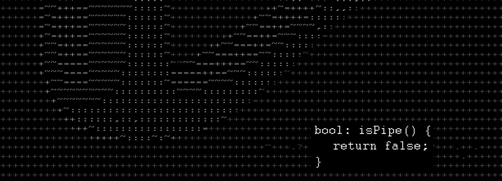
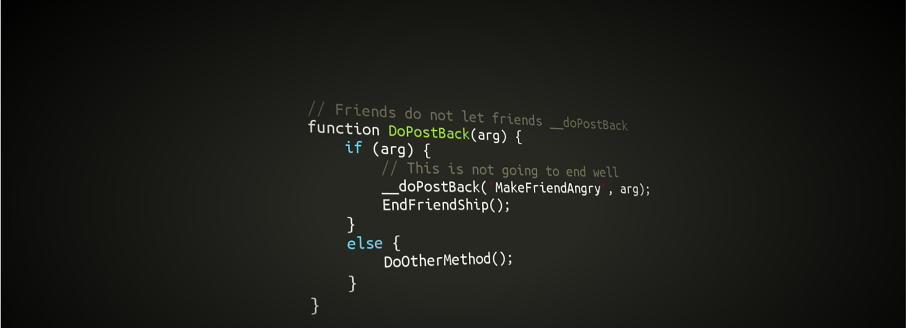
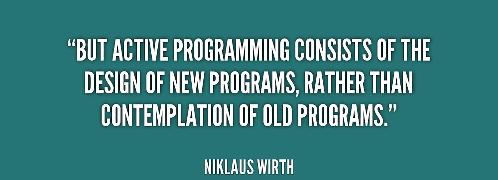
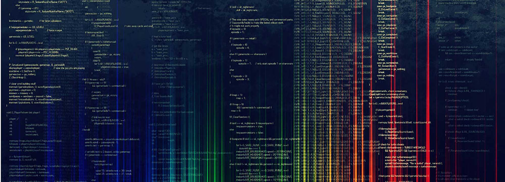

<!doctype html>
<html>
	<head>
		<title>Bootstrap Demo Project</title>
		<meta charset="utf-8">
		<meta name="viewport" content="width=device-width, initial-scale=1">
		<link rel="stylesheet" href="styles/bootstrap.min.css">
		<link rel="stylesheet" href="styles/index.css">
	</head>
	<body>
		<div class="modal fade" id="myModal" tabindex="-1" role="dialog" aria-labelledby="myModalLabel">
		  <div class="modal-dialog" role="document">
			<div class="modal-content">
			  <div class="modal-header">
				<button type="button" class="close" data-dismiss="modal" aria-label="Close"><span aria-hidden="true">&times;</span></button>
				<h4 class="modal-title" id="myModalLabel">Log-in to Bootstrap Demo</h4>
			  </div>
			  <div class="modal-body">
				<div class="form-group">
					<label class="col-sm-2 control-label" for="username">Username</label>
					<div class="col-sm-10 custom-padding">
						<input type="text" class="form-control" id="username" placeholder="username">
					</div>
					<label class="col-sm-2 control-label" for="password">Password</label>
					<div class="divider"></div>
					<div class="col-sm-10">
						<input type="password" class="form-control" id="password" placeholder="*********">
					</div>
				</div>
			  </div>
			  <div class="modal-footer">
				<button type="button" class="btn btn-danger" data-dismiss="modal">Close</button>
				<button type="button" class="btn btn-success" data-dismiss="modal" id="login_button">Log in</button>
			  </div>
			</div>
		  </div>
		</div>
		<nav class="navbar navbar-inverse navbar-fixed-top">
			<div class="container-fluid">
				<div class="navbar-header">
					<button role="button" type="button" class="navbar-toggle" data-toggle="collapse" data-target="#ham1">
						<span class="sr-only">Toggle Navigation</span>
						<span class="icon-bar"></span>
						<span class="icon-bar"></span>
						<span class="icon-bar"></span>
					</button>
					<a class="navbar-brand" href="#">Bootstrap Demo 1</a>
				</div>
				<div class="navbar-collapse collapse" id="ham1">
					<ul class="nav navbar-nav">
						<li class="active"><a href="#">Home</a></li>
						<li class="dropdown">
							<a href="#" class="dropdown-toggle" data-toggle="dropdown">Subjects <b class="caret"></b></a>
							<ul class="dropdown-menu">
								<li><a href="">DBMS</a></li>
								<li><a href="">Software Engineering</a></li>
								<li><a href="">Computer Networks</a></li>
								<li><a href="">Theory of Computation</a></li>
								<li><a href="">Operating System</a></li>
								<li class="divider"></li>
								<li><a href="">Enterpreneurship</a></li>
							</ul>
						</li>
						<li class="dropdown">
							<a href="#" class="dropdown-toggle" data-toggle="dropdown">Social Networks<b class="caret"></b></a>
							<ul class="dropdown-menu">
								<li><a href="">Facebook</a></li>
								<li><a href="">Twitter</a></li>
								<li><a href="">Quora</a></li>
								<li><a href="">Hi! 5</a></li>
							</ul>
						</li>
					</ul>
					<div class="navbar-text navbar-right">
						<a class="navbar-link" href="http://www.facebook.com" style="padding-right:20px;" data-toggle="tooltip" title="Follow at Facebook.com" data-placement="bottom">Follow Me!</a>
					</div>
					<!-- Button trigger modal -->
					<button id="log-in" type="button" class="btn btn-success navbar-right" data-toggle="modal" title="Click to Log-In" data-target="#myModal">
					  log-in
					</button>
					<div id="login_info" class="navbar-text navbar-right hidden" style="padding-right:10px;border-right:1px solid white">
						Hi Shubham Patel
					</div>


				</div>
			</div>
		</nav>
		<div class="row">
			<div class="">
				<div id="carousel-boot" class="carousel slide" data-ride="carousel">
					<ol class="carousel-indicators">
						<li data-target="#carousel-boot" data-slide-to="0" class="active"></li>
						<li data-target="#carousel-boot" data-slide-to="1"></li>
						<li data-target="#carousel-boot" data-slide-to="2"></li>
						<li data-target="#carousel-boot" data-slide-to="3"></li>
						<li data-target="#carousel-boot" data-slide-to="4"></li>
						<li data-target="#carousel-boot" data-slide-to="5"></li>
					</ol>
					<div class="carousel-inner">
						<div class="item active">
							
							<div class="carousel-caption">
								<h3 style="color:#aaa">Caption Heading One</h3>
								<p>Something never changes</p>
							</div>
						</div>
						<div class="item">
							
							<div class="carousel-caption">
								<h3>World</h3>
								<p>is Funny in term of code</p>
							</div>
						</div>
						<div class="item">
							
							<div class="carousel-caption">
								<h3>Life</h3>
								<p>The world is here</p>
							</div>
						</div>
						<div class="item">
							
							<div class="carousel-caption">
								<h3>Day</h3>
									<p>Beutiful</p>
								</div>
						</div>
						<div class="item">
							
							<div class="carousel-caption">
								<h3>Love and Life</h3>
								<p>Complicated Stuffs</p>
							</div>
						</div>
						<div class="item">
							
							<div class="carousel-caption">
								<h3>Love and Life</h3>
								<p>Complicated Stuffs</p>
							</div>
						</div>
					</div>
					<a class="left carousel-control" href="#carousel-boot" data-slide="prev">
						<span class="glyphicon glyphicon-chevron-left"></span>
					</a>
					<a class="right carousel-control" href="#carousel-boot" data-slide="next">
						<span class="glyphicon glyphicon-chevron-right"></span>
					</a>
				</div>
			</div>
		</div>
		<div class="container-fluid" id="tab-container-1">
			<ul class="nav nav-tabs" role="tablist">
				<li class="active"><a href="#aboutMe" role="tab" data-toggle="tab">About Me</a></li>
				<li><a href="#skills" role="tab" data-toggle="tab">Skills</a></li>
				<li><a href="#TVSeries" role="tab" data-toggle="tab">TV Series</a></li>
				<li><a href="#sports" role="tab" data-toggle="tab">Sports</a></li>
				<li><a href="#computers" role="tab" data-toggle="tab">Computers</a></li>
			</ul>
			<div class="tab-content">
				<div class="tab-pane active fade in" id="aboutMe">
					<h3>About Me</h3>
					<div class="row">
						<div class="col-sm-3 col-sm-offset-1">
							
						</div>
						<div class="col-sm-6">
						<p>My father’s family name being Pirrip, and my Christian name Philip, my infant tongue could make of both names nothing longer or more explicit than Pip. So, I called myself Pip, and came to be called Pip. I give Pirrip as my father’s family name, on the authority of his tombstone and my sister - Mrs. Joe Gargery, who married the blacksmith. As I never saw my father or my mother, and never saw any likeness of either of them (for their days were long before the days of photographs), my first fancies regarding what they were like, were unreasonably derived from their tombstones. The shape of the letters on my father’s, gave me an odd idea that he was a square, stout, dark man, with curly black hair. From the character and turn of the inscription, ‘Also Georgiana Wife of the Above,’ I drew a childish conclusion that my mother was freckled and sickly. To five little stone lozenges, each about a foot and a half long, which were arranged in a neat row beside their grave, and were sacred to the memory of five little brothers of mine - who gave up trying to get a living, exceedingly early in that universal struggle - I am indebted for a belief I religiously entertained that they had all been born on their backs with their hands in their trousers-pockets, and had never taken them out in this state of existence. Ours was the marsh country, down by the river, within,
Free eBooks at Planet eBook.com
as the river wound, twenty miles of the sea. My first most vivid and broad impression of the identity of things, seems to me to have been gained on a memorable raw afternoon towards evening. At such a time I found out for certain, that this bleak place overgrown with nettles was the churchyard; and that Philip Pirrip, late of this parish, and also Georgiana wife of the above, were dead and buried; and that Alexander, Bartholomew, Abraham, Tobias, and Roger, infant children of the aforesaid, were also dead and buried; and that the dark flat wilderness beyond the churchyard, intersected with dykes and mounds and gates, with scattered cattle feeding on it, was the marshes; and that the low leaden line beyond, was the river; and that the distant savage lair from which the wind was rushing, was the sea; and that the small bundle of shivers growing afraid of it all and beginning to cry, was Pip. ‘Hold your noise!’ cried a terrible voice, as a man started up from among the graves at the side of the church porch. ‘Keep still, you little devil, or I’ll cut your throat!’ A fearful man, all in coarse grey, with a great iron on his leg. A man with no hat, and with broken shoes, and with an old rag tied round his head. A man who had been soaked in water, and smothered in mud, and lamed by stones, and cut by flints, and stung by nettles, and torn by briars; who limped, and shivered, and glared and growled; and whose teeth chattered in his head as he seized me by the chin. ‘O! Don’t cut my throat, sir,’ I pleaded in terror. ‘Pray don’t do it, sir.’ ‘Tell us your name!’ said the man. ‘Quick!’.
							</p>
						</div>
					</div>
				</div>
				<div class="tab-pane fade in" id="skills">
					<div class="row">
						<div class="col-md-8 col-md-offset-1">
							<h2>Programming Skills</h2>
						<div class="panel-group" id="accordion" role="tablist" aria-multiselectable="true">
						  <div class="panel panel-default">
							<div class="panel-heading" role="tab" id="headingOne">
							  <h4 class="panel-title">
								<a role="button" class="link-adjust" data-toggle="collapse" data-parent="#accordion" href="#collapseOne" aria-expanded="true" ariacontrols="collapseOne"><p> Web Programming</p>
								</a>
							  </h4>
							</div>
								<div id="collapseOne" class="panel-collapse collapse in" role="tabpanel" aria-labelledby="headingOne">
								  <div class="panel-body">
									<table class="table">
									<thead>
									</thead>
									<tbody>
										<tr><td>HTML</td></tr>
										<tr><td>CSS</td></tr>
										<tr><td>JavaScript</td></tr>
										<tr><td>Bootstrap</td></tr>
									</tbody>
									</table>
								  </div>
								</div>
							  </div>
							  <div class="panel panel-default">
								<div class="panel-heading" role="tab" id="headingTwo">
								  <h4 class="panel-title">
									<a class="collapsed link-adjust" role="button" data-toggle="collapse" data-parent="#accordion" href="#collapseTwo" aria-expanded="false" aria-controls="collapseTwo">
									  <p>Core Programming</p>
									</a>
								  </h4>
								</div>
								<div id="collapseTwo" class="panel-collapse collapse" role="tabpanel" aria-labelledby="headingTwo">
								  <div class="panel-body">
									<table class="table">
									<thead>
									</thead>
									<tbody>
										<tr><td>C</td></tr>
										<tr><td>C++</td></tr>
										<tr><td>Java</td></tr>
										<tr><td>Python</td></tr>
									</tbody>
									</table>

								  </div>
								</div>
							  </div>
							  <div class="panel panel-default">
								<div class="panel-heading" role="tab" id="headingThree">
								  <h4 class="panel-title">
									<a class="collapsed link-adjust" role="button" data-toggle="collapse" data-parent="#accordion" href="#collapseThree" aria-expanded="false" aria-controls="collapseThree">
									 <p>Other Skills</p>
									</a>
								  </h4>
								</div>
								<div id="collapseThree" class="panel-collapse collapse" role="tabpanel" aria-labelledby="headingThree">
								  <div class="panel-body">
									<table class="table">
									<thead>
									</thead>
									<tbody>
										<tr><td>Brakets</td></tr>
										<tr><td>Adobe Photoshop</td></tr>
										<tr><td>Microsoft Office</td></tr>
										<tr><td>Visual Studio</td></tr>
										<tr><td>Netbeans</td></tr>
										<tr><td>Eclipse</td></tr>
									</tbody>
									</table>

								  </div>
								</div>
							  </div>
							</div>
						</div>
					</div>
				</div>
				<div class="tab-pane fade in" id="TVSeries">
					<div class="row">
					<div class="col-sm-offset-2 col-sm-8">
						<h2>Nothing Can Change The Past, But you can change your future</h2>
						<p>
							My father’s family name being Pirrip, and my Christian name Philip, my infant tongue could make of both names nothing longer or more explicit than Pip. So, I called myself Pip, and came to be called Pip. I give Pirrip as my father’s family name, on the authority of his tombstone and my sister - Mrs. Joe Gargery, who married the blacksmith. As I never saw my father or my mother, and never saw any likeness of either of them (for their days were long before the days of photographs), my first fancies regarding what they were like, were unreasonably derived from their tombstones. The shape of the letters on my father’s, gave me an odd idea that he was a square, stout, dark man, with curly black hair. From the character and turn of the inscription, ‘Also Georgiana Wife of the Above,’ I drew a childish conclusion that my mother was freckled and sickly. To five little stone lozenges, each about a foot and a half long, which were arranged in a neat row beside their grave, and were sacred to the memory of five little brothers of mine - who gave up trying to get a living, exceedingly early in that universal struggle - I am indebted for a belief I religiously entertained that they had all been born on their backs with their hands in their trousers-pockets, and had never taken them out in this state of existence. Ours was the marsh country, down by the river, within,
Free eBooks at Planet eBook.com
as the river wound, twenty miles of the sea. My first most vivid and broad impression of the identity of things, seems to me to have been gained on a memorable raw afternoon towards evening. At such a time I found out for certain, that this bleak place overgrown with nettles was the churchyard; and that Philip Pirrip, late of this parish, and also Georgiana wife of the above, were dead and buried; and that Alexander, Bartholomew, Abraham, Tobias, and Roger, infant children of the aforesaid, were also dead and buried; and that the dark flat wilderness beyond the churchyard, intersected with dykes and mounds and gates, with scattered cattle feeding on it, was the marshes; and that the low leaden line beyond, was the river; and that the distant savage lair from which the wind was rushing, was the sea; and that the small bundle of shivers growing afraid of it all and beginning to cry, was Pip. ‘Hold your noise!’ cried a terrible voice, as a man started up from among the graves at the side of the church porch. ‘Keep still, you little devil, or I’ll cut your throat!’ A fearful man, all in coarse grey, with a great iron on his leg. A man with no hat, and with broken shoes, and with an old rag tied round his head. A man who had been soaked in water, and smothered in mud, and lamed by stones, and cut by flints, and stung by nettles, and torn by briars; who limped, and shivered, and glared and growled; and whose teeth chattered in his head as he seized me by the chin. ‘O! Don’t cut my throat, sir,’ I pleaded in terror. ‘Pray don’t do it, sir.’ ‘Tell us your name!’ said the man. ‘Quick!’.
						</p>
						</div>
					</div>
				</div>
				<div class="tab-pane fade in" id="sports">
					<div class="row" style="padding-bottom:50px">
						<div class="col-sm-2 col-sm-offset-4">
							<button href="#" class="btn btn-info btn-lg" data-toggle="popover" title="Cricket" data-content="Played in India as a festival of nation and bind up this nation as one" data-placement="left">Cricket</button>
						</div>
						<div class="col-sm-2">
							<button href="#" class="btn btn-info btn-lg" data-toggle="popover" title="Football" data-content="Most popular sport in the world, Last Year ISL starts after which Indian team show a significant improvement" data-placement="top">Football</button>
						</div>
						<div class="col-sm-2">
							<button href="#" class="btn btn-info btn-lg" data-toggle="popover" title="Hockey" data-content="Nation Sport of India" data-placement="right">Hockey</button>
						</div>
					</div>
				<div class="row">
					<div class="col-sm-2 col-sm-offset-4">
						<button href="#" class="btn btn-info btn-lg" data-toggle="popover" title="Kabaddi" data-content="Invented in India and India is a world champion of this game" data-placement="left">Kabaddi</button>
					</div>
					<div class="col-sm-2">
						<button href="#" class="btn btn-info btn-lg" data-toggle="popover" title="Vollyball" data-content="Played with 7 player on each side, beach volleyball is a version of it" data-placement="bottom">Volleyball</button>
					</div>
					<div class="col-sm-2">
						<button href="#" class="btn btn-info btn-lg" data-toggle="popover" title="Handball" data-content="Playes with one ball and 7 player, I had played it for 3 years" data-placement="right">Handball</button>
					</div>
					</div>
				</div>
				<div class="tab-pane fade in" id="computers">
					<div class="row">
						<div class="col-sm-8 col-sm-offset-2">
							  <h2>Alerts</h2>
							  <div class="alert alert-success link-adjust">
								<a href="#" class="close link-adjust" data-dismiss="alert" aria-label="close"><p>&times;</p></a>
								  <strong>Netscape</strong> was the first browser which introduce concept of html
							  </div>
							  <div class="alert alert-info link-adjust">
								<a href="#" class="close link-adjust" data-dismiss="alert" aria-label="close"><p>&times;</p></a>
								<strong>Chrome</strong> is the leading Browser currently and designed and developed by google
							  </div>
							  <div class="alert alert-warning link-adjust">
								<a href="#" class="close" data-dismiss="alert" aria-label="close"><p>&times;</p></a>
								<strong>Apple</strong> is the Biggest company of all time and have value around $700 bn
							  </div>
							  <div class="alert alert-danger  link-adjust">
								<a href="#" class="close" data-dismiss="alert" aria-label="close"><p>&times;</p></a>
								<strong>TCS</strong> is world's second largest consultancy firm.
							</div>
						</div>
					</div>
				</div>
			</div>
		</div>
		<div class="row">
		<div style="position:relative;" class="col-md-8 col-md-offset-2">
	<nav class="navbar navbar-default navbar-static" role="navigation" id="navbar-spy">
		<h2 class="heading">Speech Of APJ Abdul Kalam at DAVV</h2>
			<div class="collapse navbar-collapse">
				<ul class="nav navbar-nav">
					<li><a href="#first" class="active">Salutation</a></li>
					<li><a href="#second">Foundation for scientific inquiry</a></li>
					<li><a href="#third">Teacher who makes the student an autonomous learner</a></li>
				</ul>
			</div>
		</nav>
		<div data-target="navbar-spy" data-spy="scroll" style="height:500px;overflow-y:scroll;position:relative">
			<div id="first">
				<h3 class="heading">Salutation</h3>
				<p>I am delighted to address and interact with the students of Devi Ahilya Vishwavidyalaya here at Indore. My greetings to all of you. Friends, today, before coming to here, in the morning, I have inaugurated a Planetarium at Ujjain. Govt of Madhya Pradesh has established this unique dynamic facility for astronomical observation and research. This planetarium is being created to provide hands-on training to students in astronomy and space-science and also kindle the urge for research in young minds.  I am sure, all youth of this University will visit Ujjain observatory and see the marvels of our Galaxy Milky Way. Dear young friends, today when I am with you, I would like to share some views and thoughts on the topic “Youth dynamics and the nation”.
Dear friends, when I am in front of over thousands of youth, I am thinking what thoughts I can share with you. I hope will provide a bridge for the innovative ideas of the youth with the mature experience of the experienced for the prosperity of this region.   I realize how the contributions of the youth in the past have continuously enriched the world of today in many fields. When I am with you, I would like to recall the inspiring advice to you by Swami Vivekananda, "how has all the knowledge in the world been gained but by the concentration of the power of the mind? The world is ready to give up its secret if we only know, how to knock, how to give it the necessary glow. The strength and force of the glow come through concentration. There is no limit to the power of the human mind. The more concentrated it is, the more power is brought to bear on one point, that is the secret”. Dear friends, this thought has indeed influenced my conscience and I would suggest that the education system must develop this faith among our youth and the youth to practice this faith in all their actions.  When I see the large number of students and teachers, I thought of sharing my experience of class rooms where the teaching done by two great teachers.  </p>
			</div>
			<div id="second">
				<h3 class="heading">Foundation for scientific inquiry</h3>
				<p><strong>Teacher puts the students ahead:</strong> Now I would like to discuss about my mathematics teacher Prof Thothatri Iyengar. As a young science student, I had an opportunity at St. Joseph’s College to witness a unique scene of divine looking personality walking through the college campus every morning, and teaching Mathematics to various degree courses.  Students looked at the personality who was a symbol of our own culture, with awe and respect.  When he walked, knowledge radiated all around.  The great personality was, Prof Thothatri Iyengar, our teacher.  At that time, ‘Calculus Srinivasan who was my mathematics teacher, used to talk about Prof Thothatri Iyengar with deep respect.  They had an understanding to have an integrated class by Thothatri Iyengar for first year B.Sc. (Hons) and first year B.Sc. (Physics).  Thus, I had the opportunity to attend his classes, particularly on modern algebra, statistics and complex variables.  When we were in the B.Sc first year, Calculus Srinivasan used to select top ten students to the Mathematics Club of St. Joseph’s, who were addressed by Prof Thothatri Iyengar. I still remember, in 1952, he gave a masterly lecture on ancient mathematicians and astronomers of India. In that lecture, my professor introduced two great astronomers and a great mathematician of India, which is still ringing in my ears. They are Aryabhatta, Bhaskara and Srinivasa Ramanujan about whom we have already discussed.   Let me discuss.</p><p>   Aryabhatta: When I was studying the chapter on Rishi scientist, one thought came to me as a student of Science. When Copernicus (15th century) and Galileo (16th century) established the dynamics of solar system, that the earth is spherical and orbits around the sun.  For this scientific statement to the world, Copernicus was forced to withdraw his statement and Galileo was imprisonment for lifetime. Whereas in 500 AD, nearly a millennium before Galileo and Copernicus, Indian astronomer and mathematician Aryabhatta discovered and publicly announced that earth orbits around the sun in about 365 days, the Indian society accepted this scientific wisdom of Aryabhatta and he happily continued to propagate his scientific work.  Now let me share an experience from a great teacher.   </p>
			</div>
			<div id="third">
				<h3>Teacher who makes the student an autonomous learner </h3>
				<p>A great teacher, who is a living legend now is Prof. Chinnadurai.  He taught me physics, particularly Nuclear Physics. The way the Professor taught, many students started loving physics, particularly Nuclear Physics. Rev Father Chinnadurai, when he was taking lessons, used to give reference articles and good reference books, which the students can refer and read. And the Physics teacher ensured that we all referred  good Physics textbooks during the lecture instead of only reading the notes. This widened the horizon of the learning of the students. In his prime age, Fr Chinnadurai is staying in Dindugal and I meet him and pay my respects, whenever I am in that area. The method of teaching of Fr Chinnadurai is important for making the student a life long autonomous learner, which is essential for continuous contribution for the growth of individual, and thereby the nation. The best learning takes place when the teacher infuses a creative learning habit in the students and makes it an enjoyable part of life-long quest for knowledge. Even today, whenever I meet him, he radiates a sense of enlightenment. These examples show how teachers can influence the students not only by teaching but also giving practical lessons in human values, particularly the trait of selfless giving of knowledge.  Always I am grateful to my college for facilitating me to acquire the knowledge and also value system in life.   In the present situation in the world where every citizen wants to live in a prosperous and peaceful atmosphere, the empowerment of youth with enlightenment becomes vital. This has three dimensions viz education with value system, bridging religions through spirituality and inclusive development. The school atmosphere and the teachers way of teaching, both inside and outside the class should inject the youth with righteousness in the heart.   </p>
			</div>
		</div>
	</div>
		</div>
		<div class="container-fluid" id="footer">
				<div class="row">
					<div class="col-sm-5">
					
					</div>
					<div class="col-sm-7">
					<h1 class="heading">Designed by <strong>Shubham Patel</strong></h1>
					<div>
						
					</div>
					</div>
				</div>
		</div>

		<script src="script/jquery-2.1.4.min.js"></script>
		<script src="script/bootstrap.min.js"></script>
		<script src="script/custom.js"></script>
	</body>
</html>
